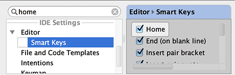

You can quickly find a setting you need in the Settings/Preferences dialog, without browsing through the numerous options. Just type some characters that, in your opinion, exist in the option description, and the list of settings will reduce to the matching ones. Select the desired entry, and see the setting that contains the entered characters highlighted:
